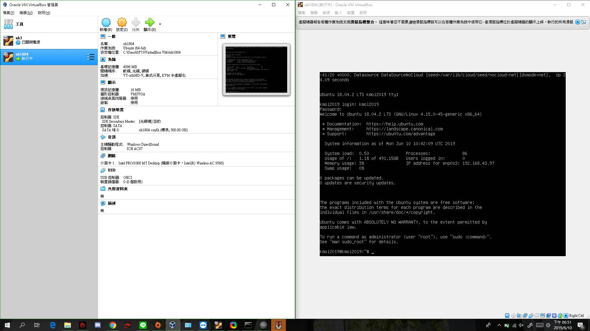

https://www.youtube.com/watch?v=9rICeIw725g&feature=share
虛擬主機-2
https://www.youtube.com/watch?v=KeQ1gzXY4JY
虛擬主機-3
https://www.youtube.com/watch?v=zS0UXucwGhY
虛擬主機-4
https://www.youtube.com/watch?v=GJ5kIzSw7mA
操作結果:
